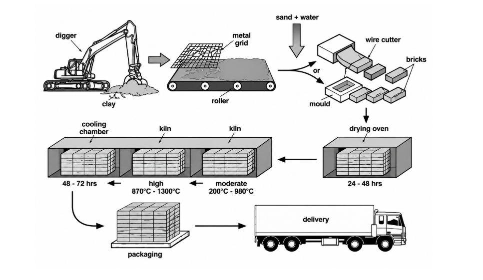
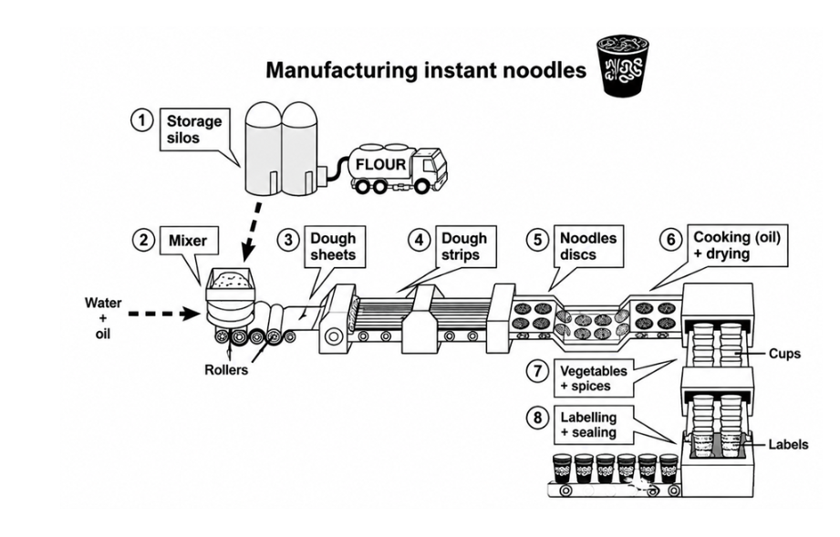
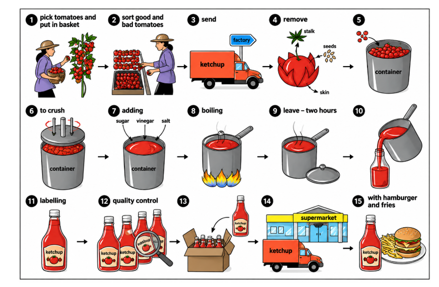
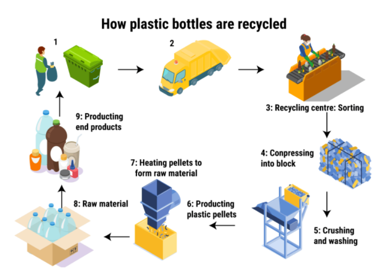
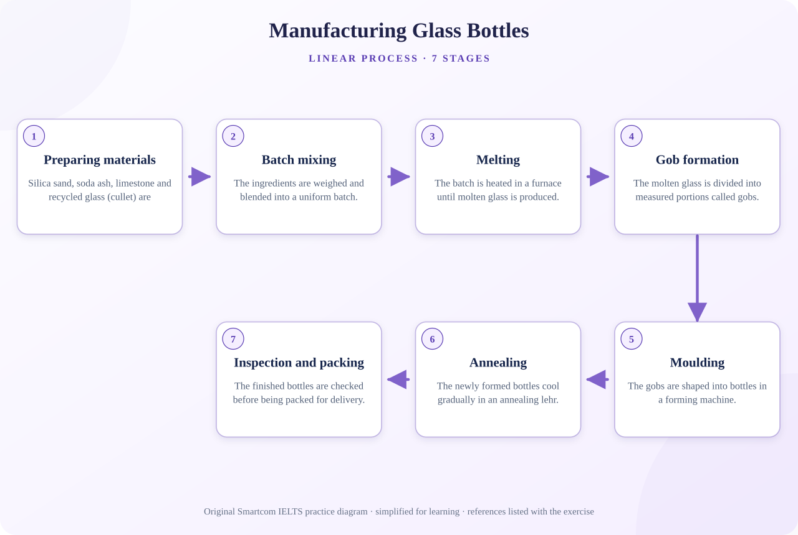
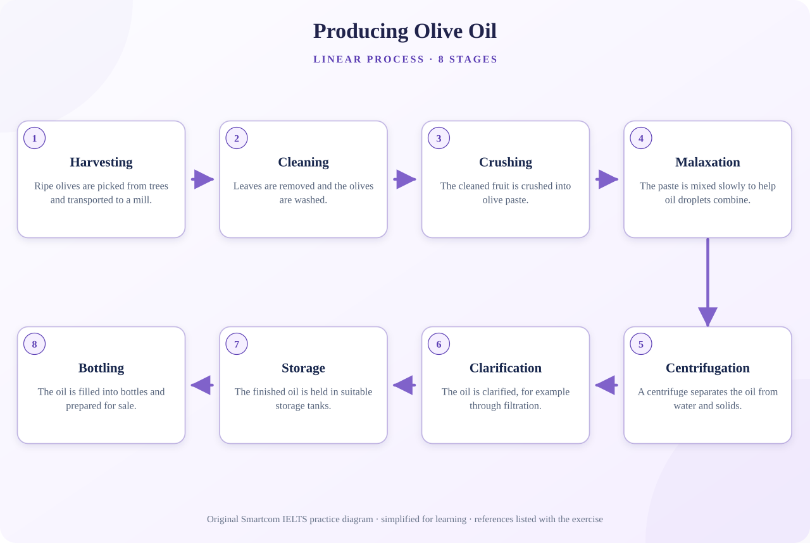

Linear Process
Quy trình tuyến tính. Có điểm bắt đầu và kết thúc rõ ràng: sản xuất, chế biến, đóng gói và tái chế theo dây chuyền.
Danh sách bài luyện
6 bài
Manufacturing Bricks
Quy trình sản xuất gạch từ đất sét đến đóng gói và vận chuyển.
Bắt đầu luyện →
Manufacturing Instant Noodles
Quy trình sản xuất mì ăn liền từ bột mì đến cốc mì được dán nhãn và niêm phong.
Bắt đầu luyện →
Manufacturing Tomato Ketchup
Quy trình sản xuất tương cà chua từ thu hoạch đến đóng chai, kiểm tra và phân phối.
Bắt đầu luyện →
Recycling Plastic Bottles
Quy trình tái chế chai nhựa từ thu gom đến tạo ra nguyên liệu và sản phẩm mới.
Bắt đầu luyện →
Manufacturing Glass Bottles
The diagram illustrates the main stages in the manufacture of glass bottles from raw materials.
Bắt đầu luyện →
Producing Olive Oil
The diagram shows a typical linear process used to produce filtered olive oil.
Bắt đầu luyện →Các bài mới được Smartcom biên soạn dựa trên nguồn thông tin công khai. Sơ đồ là minh họa gốc phục vụ luyện viết, không phải đề thi IELTS chính thức.